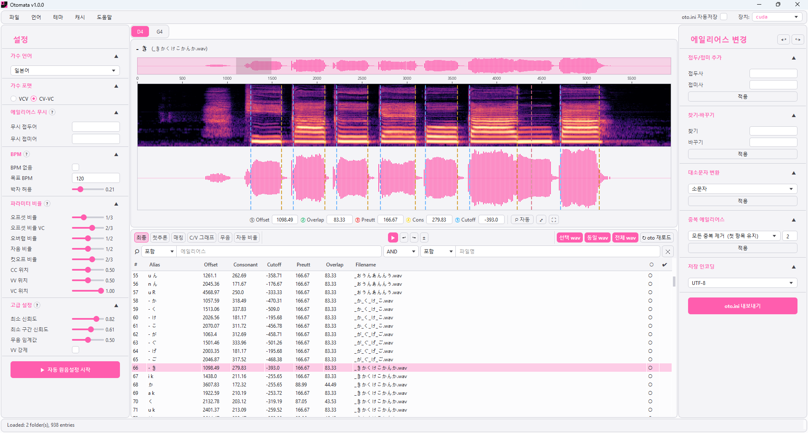

원음설정,
직접 찍는 시간은 줄이고
다듬는 시간만 남기세요
Otomata는 한국어·일본어 UTAU 음원의 원음설정(oto.ini)을 자동으로 초벌 작업하는 데스크톱 도구입니다. 파형 위에서 바로 확인하고, 다듬고, 내보내세요.
Windows · 베타 종료 · 정식 버전 2026년 10월 출시 예정

라벨링의 반복 작업을 도구에게
수백 개의 wav에 같은 작업을 반복하는 대신, 초벌은 Otomata가 합니다.
AUTO LABELING
자동 원음설정
학습된 모델이 오프셋·자음부·선행발성·오버랩을 초벌로 배치합니다. 제작자는 결과를 확인하고 필요한 곳만 손보면 됩니다.
WAVEFORM EDITOR
파형 위에서 바로 편집
파형과 스펙트로그램을 보며 파라미터를 드래그로 조정합니다. 수치 입력과 미리듣기를 오가는 번거로움이 없습니다.
KO · JA
한국어·일본어 지원
두 언어 모두 CV-VC와 VCV(연속음) 음원을 지원합니다. 한국어와 일본어 음원을 오가며 작업하는 제작 환경에 맞췄습니다.
OTO.INI COMPATIBLE
기존 작업과 호환
표준 oto.ini 형식을 그대로 읽고 씁니다. 쓰던 에디터에서 만든 음원을 불러와 이어서 작업할 수 있습니다.
세 단계면 충분합니다
01 — LOAD
음원 불러오기
녹음한 wav 폴더 또는 기존 oto.ini를 엽니다.
02 — LABEL
자동 라벨링
모델이 전체 파일의 원음설정을 초벌로 작성합니다.
03 — REFINE
다듬고 내보내기
파형에서 확인·조정한 뒤 oto.ini로 저장합니다.
베타 테스트가 종료되었습니다.
2026. 8. 22 — 8. 31 · 무료 베타에 참여해 주신 모든 분께 감사드립니다. 보내주신 오류 신고와 의견은 정식 버전에 반영되고 있습니다.
정식 버전은 2026년 10월 중 출시 예정입니다. 베타 빌드는 더 이상 실행되지 않으니, 조금만 기다려 주세요. 출시 소식은 X(@matax2bi)에서 가장 먼저 알려드립니다.